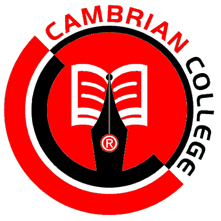

```
```
1. American International University-Bangladesh (AIUB)
Bachelor of Science in Computer Science & Engineering (CSE) · 2023 – 2027
Areas of Interest:
- CPU Architecture
- Computer Organization
- Digital Logic Design
- Operating Systems
```
Bachelor of Science in Computer Science & Engineering (CSE) · 2023 – 2027
Areas of Interest:

```Higher Secondary Certificate (HSC) · 2019 – 2021
Academic Focus:
Secondary School Certificate (SSC) · 2017 – 2019
Academic Focus: